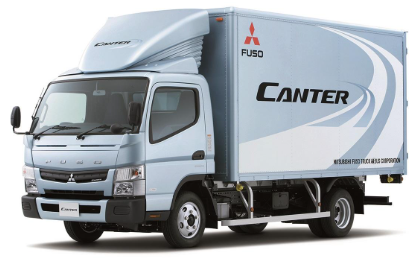
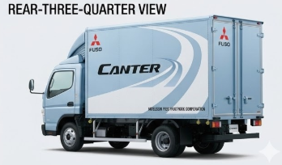
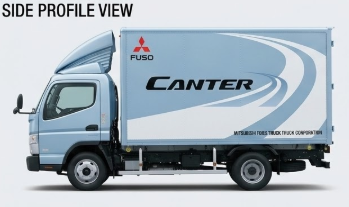

Cabin & Comfort
Technology & Maintenance
Variants & Capability
The Mitsubishi Canter has taken upon itself to fill the gap between large trucks and passenger car-sized pickups in moving the industry. Forming the backbone of medium-and small-scale business supply deliveries, the Canter is the perfect pack mule for emerging enterprises in the Philippine economic setting
FUSO TF CANTER FE84 C/C 3.0D MT